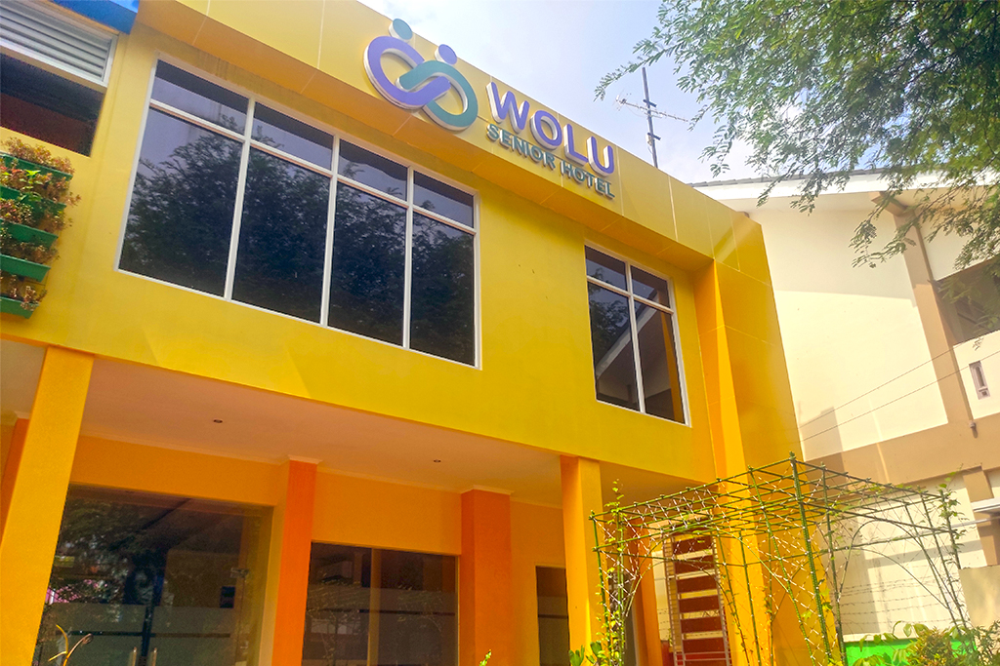

Pada mulanya di kota Semarang hanya ada satu Sekolah Pekerja Sosial Atas (SPSA) yaitu SPSA Semarang yang berlokasi di Jl. Imam bonjol semarang yang berdiri tahun 1961. SPSA adalah sekolah khusus yang mempunya jenjang pendidikan 4 tahun.
SMK Negeri 8 Semarang merupakan salah satu Sekolah Menengah Kejuruan (SMK) di Indonesia yang sejak tahun pelajaran 1994/1995 telah ditunjuk sebagai SMK yang melaksanakan Pendidikan Sistem Ganda (PSG).
PSG adalah suatu bentuk penyelenggaraan pendidikan keahlian profesional yang memadukan secara sistematis dan sinkron antara program pendidikan di sekolah dan program penguasaan keahlian yang diperoleh melalui kegiatan bekerja langsung di dunia kerja, terarah untuk mencapai suatu tingkat keahlian profesional tertentu.
Pelaksanaannya melalui Praktek Kerja Industri (Prakerin) yang mulai diberlakukan pada siswa tingkat I semester II sebagai masa orientasi kerja/pengenalan kerja dengan jangkawaktu 1 bulan dan tingkat II semester V selama 2 bulan sebagai masa pelatihan kerja dengan dibantu pembimbing di Dunia Usaha/Dunia Industri (DU/DI), masa kerja dengan bimbingan guru dan DU/DI, dengan persiapan tugas akhir sebagai syarat mengikuti Uji Kompetensi oleh LSP (Lembaga Sertifikasi Profesi).
Saat ini SMK Negeri 8 Semarang mempunyai empat jurusan yaitu Perawatan Sosial (PS), Rekayasa Perangkat Lunak (RPL), Multimedia (MM), Caregiver (CG) dan Teknik Komputer dan Jaringan (TKJ). Pada Penerimaan Peserta Didik (PPD) tahun 2015, SMKN 8 Semerang membukukan catatan baik. Pendaftar mencapai 1.744 orang. Padahal kuota yang disediakan untuk siswa baru hanya 391 kursi.
Tentang Jurusan
Jika kamu bertanya-tanya dan masih bingung tentang jurusan yang ada di SMK Negeri 8 Semarang, maka simaklah lebih lanjut.
Pasti kalian merasa kebingungan saat masuk SMK, apalagi saat menentukan jurusan yang akan dipilih. Program keahlian di SMK Negeri 8 Semarang ada 5. Nah, agar tidak bingung dengan program keahliannya, yuk simak dibawah ini!
Keperawatan Sosial adalah mata pelajaran yang diajarkan di SMK Negeri 8 Semarang untuk Jurusan Keperawatan Sosial. Keperawatan Sosial merupakan salah satu Kompetensi Keahlian dari Program Keahlian: Pekerjaan Sosial, dan Bidang Keahlian: Kesehatan dan Pekerjaan Sosial.
Rekayasa Perangkat Lunak (RPL) adalah salah satu kompetensi keahlian dalam bidang Teknologi Komputer dan Informatika yang secara khusus mempelajari tentang pemrograman komputer. Lulusan RPL dewasa ini sangat dibutuhkan untuk menjawab banyaknya kebutuhan industri bagi ketersediaan tenaga Teknisi dalam bidang pengembangan software. Beberapa ruang lingkup pekerjaan di bidang RPL adalah Software Developer, Game Development, Software Tester, Software Engineering , Software Analis dan Integrator, Konsultan IT dan Programmer.
Multimedia adalah salah satu kompetensi keahlian di SMK Negeri 8 Semarang yang mendidik para siswanya untuk menjadi tenaga muda ahli di bidang multimedia. Multimedia merupakan kombinasi teks, seni,animasi, gambar dengan dilengkapi audio video yang di komunikasikan /disampaikan baik melalui computer atau peralatan manipulasi elektronik dan digital lain(Vaughan, 2006).
Caregiver merupakan jurusan di SMK Negeri 8 Semarang yang mengkhususkan dalam perawatan lansia dan atau pasien yang sedang menjalani masa penyembuhan di rumah. Kompetensi keahlian (jurusan) caregiver termasuk dalam bidang keahlian Kesehatan dan Pekerjaan Sosial dengan program keahlian pekerjaan sosial.
Teknik Komputer dan Jaringan (TKJ) adalah program keahlian yang bertujuan membekali peserta didik dengan keterampilan, dan pengetahuan dalam merawat, merakit, menginstall, dan mendesain sebuah jaringan. Siswa TKJ di targetkan untuk mampu bekerja sebagai teknisi komputer dan administrator jaringan di toko/ servis komputer, kantor, hotel, bank atau ISP baik di tingkat lokal (nasional) maupun luar negeri.
Itu tadi adalah penjelasan singkat mengenai kompetensi keahlian yang ada di SMK Negeri 8 Semarang. Jadi, masih pada bingung nggak untuk menentukan jurusan yang mau dipilih?Semoga informasi diatas membantu.
Sebuah Pilihan
Memilih sekolah dan kompetensi keahlian bukanlah hal yang mudah bagi setiap orang, terutama saya. Bagi saya memilih sebuah kompetensi keahlian, sama saja dengan menentukan jalan bagi masa depan. Tidak sedikit dari orang-orang yang memilih kompetensi keahlian mereka secara asal tanpa pikir panjang. Tapi bagi saya memilih kompetensi keahlian harus dengan pertimbangan.
 To go places and do things that have never been done before – that’s what living is all about.Memilih jurusan yang tepat, dapat menjadi kunci kesuksesan. Sudah pasti banyak yang kurang setuju dengan gagasan disamping ini. Tapi kurang lebih seperti itu pemikiran saya.
Jadi maksud saya adalah jika kita memilih jurusan atau kompetensi keahlian dengan tepat, kita dapat mendapat pelajaran sesuai hal yang kita minati dan pastinya akan berguna bagi masa depan.
Blog Website by Kezia Regina · Images by SMK Negeri 8 Semarang